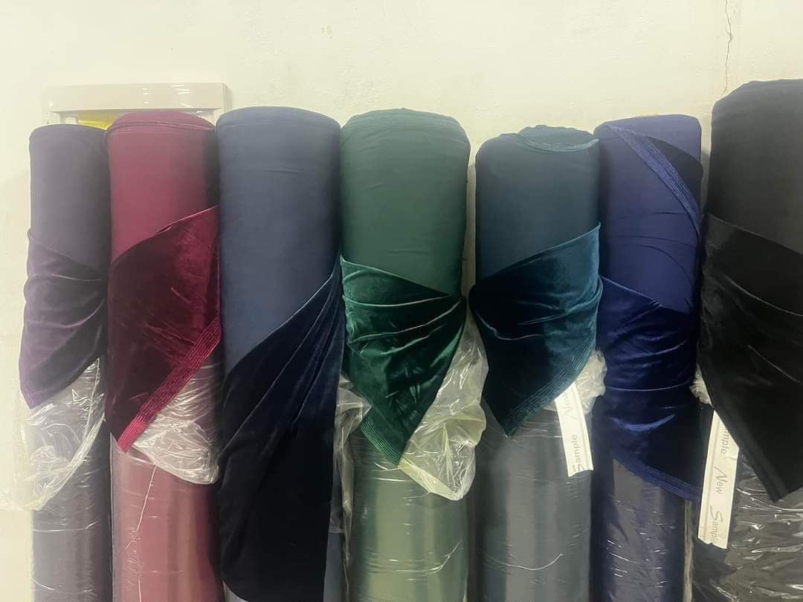
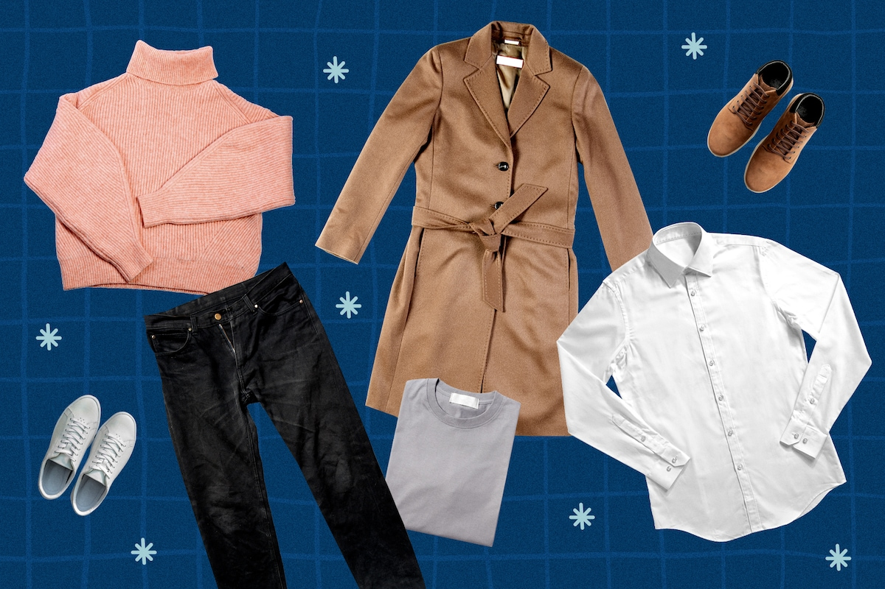
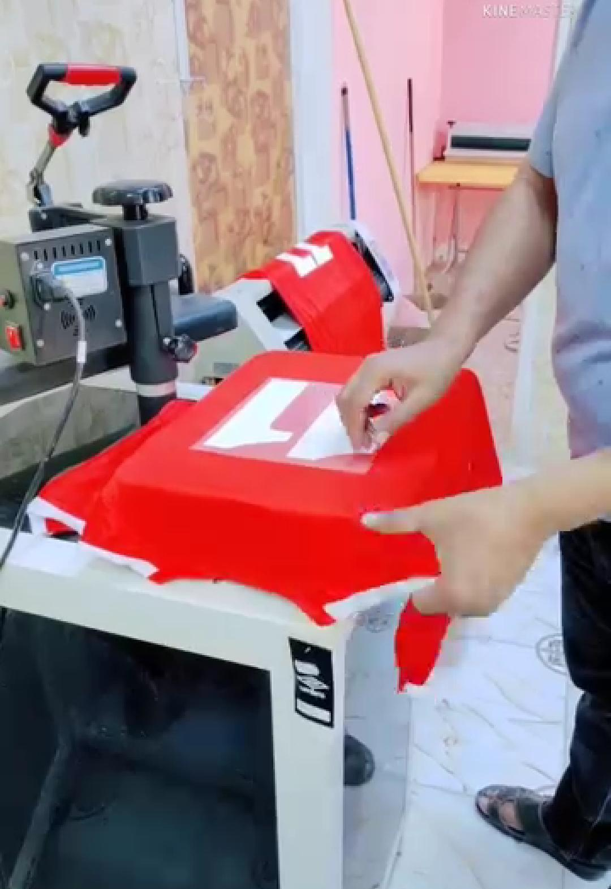

تعتبر صناعة الملابس من الصناعات الأساسية والمهمة في العالم، وتتطلب صناعة
الملابس عملية إنتاج متكاملة تشمل العديد من المراحل. تتضمن مراحل الإنتاج
للملابس عمليات معقدة بدءًا من اختيار الأقمشة المناسبة وتصميم الملابس حتى
صنع الأزرار والحبال والعبوات والتعبئة والتغليف. يعتبر الالتزام بجودة
الإنتاج والتفنن في الصناعة والتصميم من أهم الأسباب لنجاح الشركات في هذا
المجال، حيث يتم تحقيق ذلك من خلال استخدام التكنولوجيا المتقدمة والآلات
الحديثة، بالإضافة إلى فريق عمل عالي الكفاءة ومؤهل لتلبية تحديات المجال
وسوق الملابس العالمي الذي يتغير بشكل مستمر. بالنهاية، تعد صناعة الملابس
من الصناعات الحيوية التي تسهم في تلبية احتياجات الناس في الحياة اليومية،
وتلعب دورًا كبيرًا في تطوير اقتصاديات الدول المختلفة.
المرحلة الاولى : القماش
القماش

في هذه المرحلة يتم اختيار القماش بعناية وفقًا لمتطلبات الملابس
المراد صنعها، ويتم التأكد من جودة ونوعية القماش، ويتم قياس المواد
بدقة حتى يتم تجنب أية أخطاء في المراحل اللاحقة.
المرحلة الثانية: التحديد
تحديد المنتج

مرحلة التحديد تعتبر من أهم المراحل في صناعة الملابس حيث يتم تحديد
تفاصيل ومواصفات التصميم مثل الألوان والخامات المستخدمة والأحجام
بدقة، هذه المرحلة تساعد على التأكد من أن الملابس المصنوعة سوف تتناسب
مع المتطلبات المحددة مسبقًا وتضمن الجودة العالية.
المرحلة الثالثة : التصنيع
تصنيع المنتج
يتم خلال هذه المرحلة تحويل القماش إلى أجزاء ملابس منفصلة من خلال
عملية القطع والتجهيز والتصنيع اللازمين للحصول على منتج نهائي وفق
المعايير والمواصفات المحددة، ويتم التأكد من اختيار أفضل التقنيات
والآلات المخصصة لتصنيع الملابس بدقة وجودة عالية.
المرحلة الاولى في التنصيع : الخياطة:
خياطة الملابس
يتم جمع الأجزاء المصنوعة في الخطوة السابقة، ويتم ترتيبها وخياطتها
بشكل دقيق وتجمع كل العناصر معًا للحصول على المظهر النهائي المطلوب
وتضمن الإنتاجية والجودة.
المرحلة الثانية في التنصيع : التطريز:
تطريز الملابس
يتم تنفيذ تقنية التطريز من قبل عمال الخياطة المدربين ذوي الخبرة
الذين يستخدمون الأدوات المتخصصة لتغريز وإضافة الزخرفات المراد
تنفيذها على الملابس، ويتم العمل بدقة ومهارة مدروسة لإنتاج المنتجات
عالية الجودة.
المرحلة الثالثة في التصنيع: الطباعة:
طباعة الملابس

في هذه المرحلة يتم تطبيق نمط وتصميم معين على الملابس باستخدام أحدث
تقنيات الطباعة المتاحة، حيث يتم استخدام المواد الكيميائية والأحبار
لضمان إضافة الصور والأشكال والتصاميم الرائعة على الأقمشة بدقة وجودة
عالية.
المرحلة الرابعة في التصنيع :التغليف:
تغليف المنتج
في هذه المرحلة، تتم عملية التعبئة والتغليف والبستنة اللازمة للملابس
كي تكون جاهزة للتسليم، ويتم تحديد الحجم والألوان والأنماط والخامات
وما إلى ذلك، ويتم وضعها في العلب أو الأكياس المناسبة. ويتم وضع
العلامات والتعليمات اللازمة على الملابس كما يتم تضمين الملحقات
اللازمة ، ويعد الهدف في هذه المرحلة هو تأمين إنتاج منتجات عالية
الجودة وذات عمر افتراضي طويل.
 يتم جمع الأجزاء المصنوعة في الخطوة السابقة، ويتم ترتيبها وخياطتها بشكل دقيق وتجمع كل العناصر معًا للحصول على المظهر النهائي المطلوب وتضمن الإنتاجية والجودة.
يتم جمع الأجزاء المصنوعة في الخطوة السابقة، ويتم ترتيبها وخياطتها بشكل دقيق وتجمع كل العناصر معًا للحصول على المظهر النهائي المطلوب وتضمن الإنتاجية والجودة. في هذه المرحلة، تتم عملية التعبئة والتغليف والبستنة اللازمة للملابس كي تكون جاهزة للتسليم، ويتم تحديد الحجم والألوان والأنماط والخامات وما إلى ذلك، ويتم وضعها في العلب أو الأكياس المناسبة. ويتم وضع العلامات والتعليمات اللازمة على الملابس كما يتم تضمين الملحقات اللازمة ، ويعد الهدف في هذه المرحلة هو تأمين إنتاج منتجات عالية الجودة وذات عمر افتراضي طويل.
في هذه المرحلة، تتم عملية التعبئة والتغليف والبستنة اللازمة للملابس كي تكون جاهزة للتسليم، ويتم تحديد الحجم والألوان والأنماط والخامات وما إلى ذلك، ويتم وضعها في العلب أو الأكياس المناسبة. ويتم وضع العلامات والتعليمات اللازمة على الملابس كما يتم تضمين الملحقات اللازمة ، ويعد الهدف في هذه المرحلة هو تأمين إنتاج منتجات عالية الجودة وذات عمر افتراضي طويل.